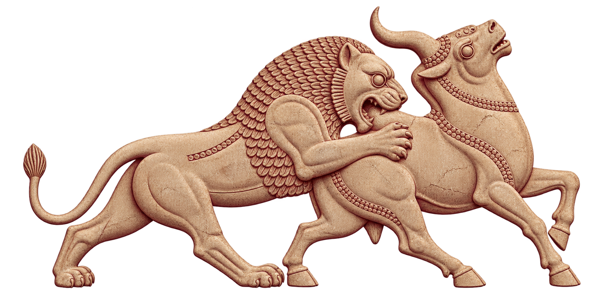
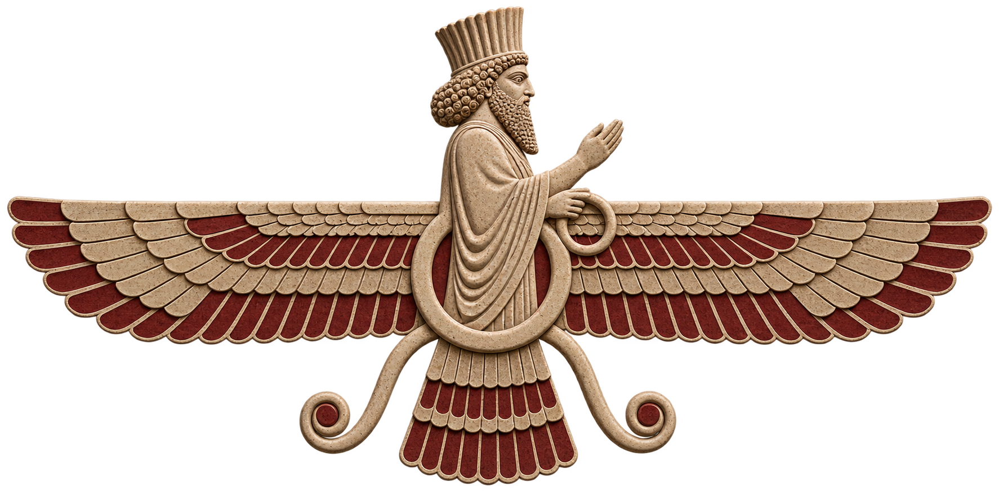

Celebrate
Nowruz, Yalda, Chaharshanbe Suri, and more.
Persian Student Association · University of Utah
PERSA brings students and friends together through Persian celebrations, art, food, music, and unforgettable events in the heart of Salt Lake City.
Welcome — Khosh Amadid
No Persian background required.
Gather with us
From ancient traditions to new friendships, our calendar is made for gathering.

Inspired by the reliefs of PersepolisPersian culture
Persian culture spans millennia, yet its heart remains wonderfully present: hospitality, poetry, celebration, and care for one another. PERSA creates room to experience it—whether it is already home or entirely new to you.
Nowruz, Yalda, Chaharshanbe Suri, and more.
Language, art, music, food, history, and poetry.
Meet a welcoming community across campus.
A little trip back in time
See an approximate, just-for-fun rendering inspired by Achaemenid cuneiform. The script is phonetic, so spelling is based on sound rather than modern Persian letters.
Learn how the converter works →Your Old Persian rendering
k-u-r-u-shEducational approximation · not a historical translation
Moments we share
A growing archive of celebrations, conversations, and community.
About PERSA
PERSA is a registered student organization at the University of Utah. We celebrate Persian heritage, support our members, and invite the wider campus to learn, gather, and belong.
Meet the people
Student-led, community-minded, and always happy to hear from you.

Find your people
Join through Campus Connect for official updates, then follow our socials for events and community news.